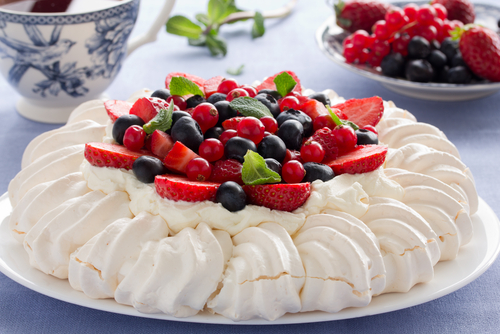

QUE COMER EN SIDNEY - LOS MEJORES SABORES DE AUSTRALIA
Sidney esta considerada como una de las ciudades con mas calidad de vida del mundo, y parte de este merito la tiene su gastronomia, caracterizada por la gran diversidad de productos organicos y procedentes de agricultura ecologica con los que realizan sus platos, lo que los dota de una gran frescura y calidad.
Sidney esta rodeada de oceanos, por lo que dos de sus ingredientes principales son el pescado y el marisco. Uno de los platos mas innovadores de la cocina vanguardista de este lugar es la ensalada de Balmain Bugs, hecha con un tipo de langosta muy apreciada en las costas de la ciudad australiana.
Lo mas tipico que puedes comer en Sidney
Carnes y pescados
Entre sus guisos mas comunes encontramos pescados y mariscos como langostas, cangrejos, centollos, gambas y yabbies (parecido a los langostinos pero de agua dulce).
|
Platos tipicos
Entre los platos mas tradicionales de Australia que se pueden saborear en Sydney, hay que indicar algunas recetas cuya base son el pescado o la carne, como por ejemplo el filete con ostras, el South Sea fish (pescado al limon), las tortitas de cordero con manzana o el cordero rehogado. En cuanto a recetas vegetarianas, podemos destacar los chokoes con queso (calabacines rellenos). La sopa de ostras tambien es muy demandada, condimentada con apio y cebollas que le dan un sabor muy especial.
|
Platos tipicos  El postre mas suculento de toda Australia es una tarta llamada Pavlova, elaborada con merengue, nata y frutas tropicales como mango, papaya, etc. Tambien puede incluir frutas frescas como el kiwi, platano y melon, entre otras. Otro dulce muy rico son los famosos lamingtons (bizcochos cubiertos de chocolate y coco y tambien las Anzac biscuits, unas galletas hechas con avena, harina, coco, azucar y manteca. |